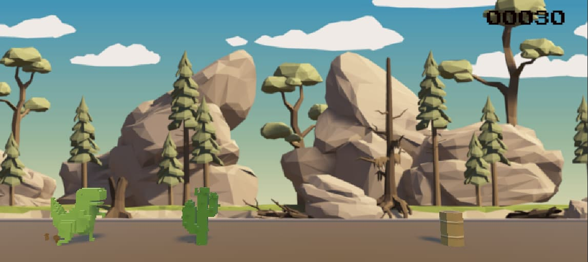
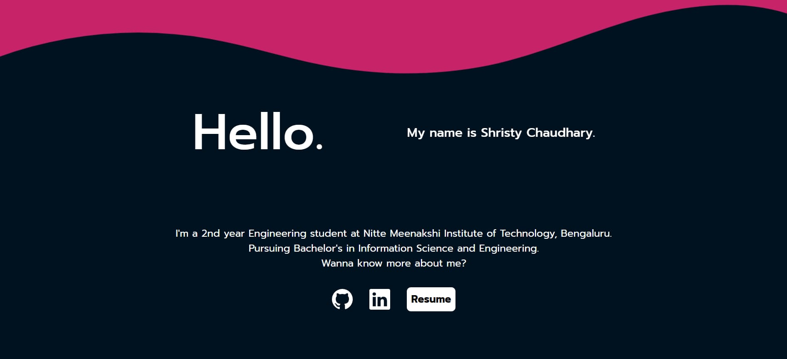
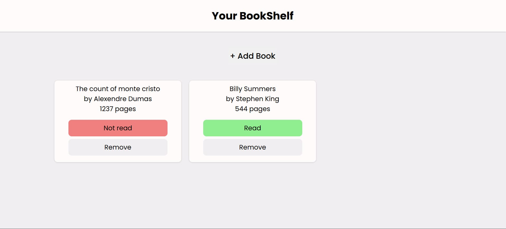
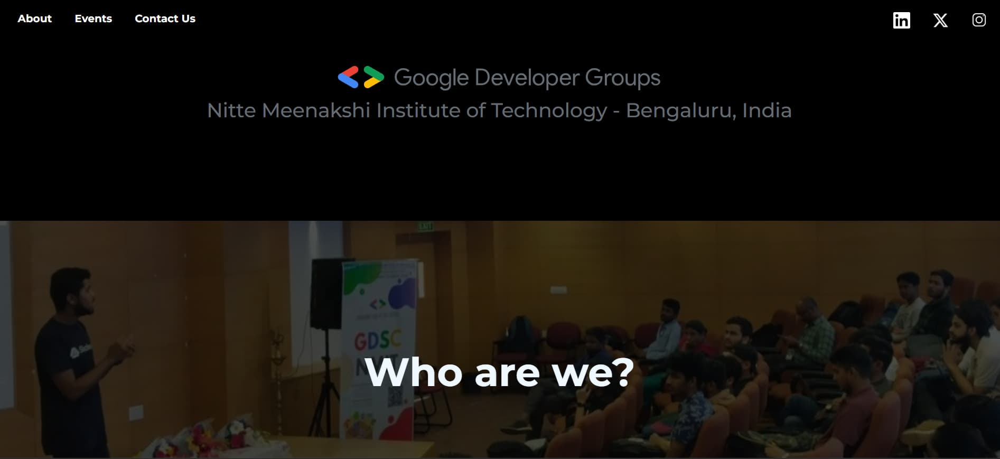
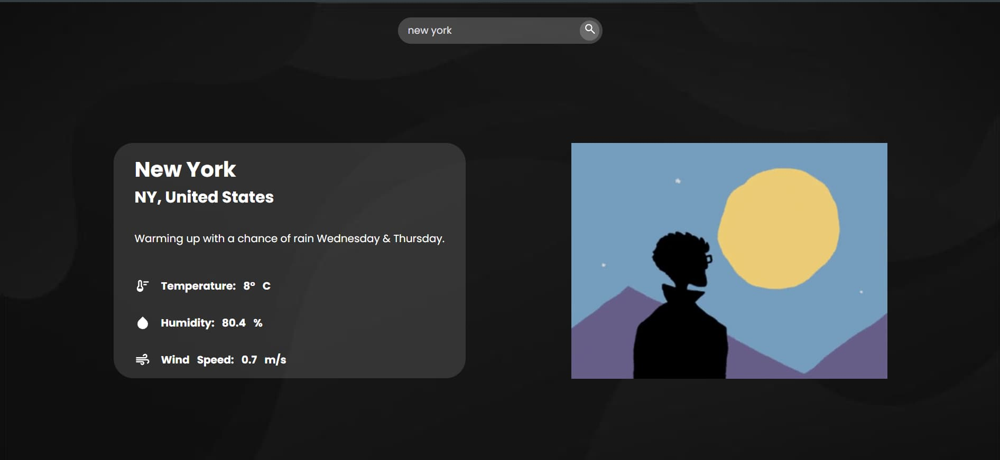
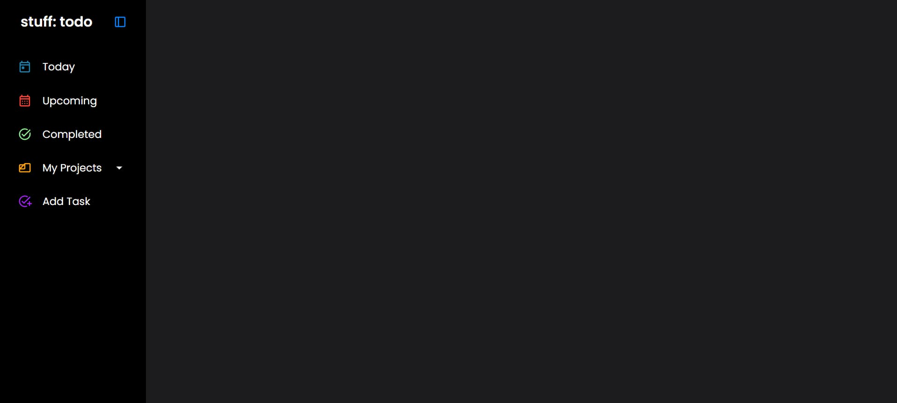

H
e
l
l
o
.
My name is Shristy Chaudhary.
I'm a 2nd year Engineering student at Nitte Meenakshi Institute of Technology, Bengaluru.
Pursuing Bachelor's in Information Science and Engineering.
Wanna know more about me?
Resume
SKILLS
Linux
Python
C++
Git
HTML
CSS
JavaScript
Jest
C#
Unity
Webpack
LaTeX
PROJECTS

Chrome Dino 3D
Chrome Dino 3D is a 3D recreation of the iconic Chrome T-Rex game, built using C# in the Unity Game Engine. It features enhanced visuals and gameplay while staying true to the original concept and is deployed on the Unity platform.

This Portfolio Page
A modern, interactive portfolio website built using HTML, CSS, and JavaScript, bundled with Webpack. It features smooth animations, dynamic content loading, and a responsive design to showcase projects and skills effectively.

BookShelf
A simple book library app built with HTML, CSS, and JavaScript. Users can add and remove books while storing details like title, author, and page count.

GDG NMIT page
An engaging landing page for Google Developer Groups at Nitte Meenakshi Institute of Technology, Bengaluru. It highlights the club’s mission, activities, and events while providing students with opportunities to connect, learn, and grow in the tech community.

Weather App
A weather app that allows users to search for a city's weather, fetching real-time data from Visual Crossing. It also integrates Giphy to display a relevant animated GIF based on the weather conditions, enhancing the user experience.

Stuff: todo
Stuff: To Do is a to-do list app built with HTML, CSS, JavaScript, and Webpack. It utilizes the LocalStorage API to save tasks and leverages date-fns for efficient date handling, making task management and tracking more convenient.
 Linux
Linux Python
Python C++
C++ Git
Git HTML
HTML CSS
CSS JavaScript
JavaScript Jest
Jest C#
C# Unity
Unity Webpack
Webpack LaTeXLinuxPythonC++GitHTMLCSSJavaScriptJestC#UnityWebpackLaTeX
LaTeXLinuxPythonC++GitHTMLCSSJavaScriptJestC#UnityWebpackLaTeX